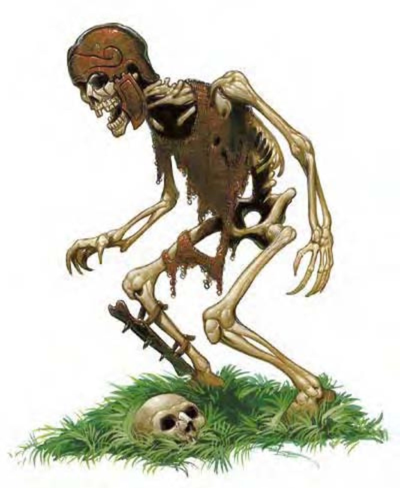

这种生物只是一组活化骨头，空眼眶中燃着细微的红光。
骷髅是活化后的死者骨头，无意识地遵从邪恶主人的命令而进行活动。
除了腐烂的衣料或死前所穿戴的衣物或防具外，骷髅多半一丝不挂。他们只会听令行事，不会自行判断或主动行动。因为这些限制，所以命令必须简单，像是“杀害任何进入房间的人”。
骷髅会持续奋战直至被毁，这也是他们被制作出来的原因。其威胁性与骷髅群的大小成正比。
“骷髅”是一种后天模板，可以套用在任何具有骨骼系统的实体生物上（被套用的生物称为基底生物），但不死生物除外。
体型及种类：生物种类变更为不死生物，除了阵营（例如善良）及物种（例如类地精或爬行生物）之外的亚种不变。他们不会成为强力亚种。除了此处所列说明之外，骷髅所有数据和特殊能力都比照基底生物。
生命骰：失去职业等级所获得的生命骰（总生命骰最少降至1），并将剩余的生命骰改为d12。若基底生物原本生命骰超过20，则无法使用“操纵死尸”法术来变成骷髅。
速度：有翼的骷髅无法用翅膀飞行。如果基底生物可靠魔法飞行，骷髅也可以。
防御等级：天生防御加值依骷髅体型大小而变更：
| 体型 | AC天生防御加值 |
| 超小型以下 | +0 |
| 小型 | +1 |
| 中型或大型 | +2 |
| 超大型 | +3 |
| 巨型 | +6 |
| 超巨型 | +10 |
攻击：骷髅保有基底生物原本的所有天生武器、人造武器和擅长武器能力。但需肉体才能使用的武器除外（例如夺心魔的触手攻击）。原本有手的生物每手变为一次爪抓攻击，并具有全部的攻击加值。骷髅的基本攻击加值等于生命骰的一半。
伤害：天生与人造武器的伤害照常。爪抓攻击的伤害依骷髅体型大小而定（如果基底生物原本就具有爪抓攻击，则伤害值取较佳者）。
| 体型 | 爪抓伤害 |
| 微型或超微型 | 1 |
| 超小型 | 1d2 |
| 小型 | 1d3 |
| 中型 | 1d4 |
| 大型 | 1d6 |
| 超大型 | 1d8 |
| 巨型 | 2d6 |
| 超巨型 | 2d8 |
特殊攻击：骷髅不具有基底生物的原有特殊攻击。
特殊能力：骷髅多半不具有基底生物的原有特殊能力，但可以保有增强近战或远程攻击的专长能力。除此之外，僵尸会获得下列特殊能力：
― 对寒冷免疫 (特异)：骷髅不受寒冷影响。
― 伤害减免5 / 敲击：骷髅不具备血肉与内脏。
豁免检定：基本豁免加值为强韧加三分之一生命骰、反射加三分之一生命骰、意志加二分之一生命骰+2。
属性：骷髅的敏捷+2，没有体质与智力属性。感知改为10，魅力改为1。
技能：骷髅没有技能。
专长：骷髅失去基底生物的原有专长，但获得“精通先攻”。
挑战级数：依生命骰而定：
| 生命骰 | 挑战级数 |
| 1/2 | 1/6 |
| 1 | 1/3 |
| 2-3 | 1 |
| 4-5 | 2 |
| 6-7 | 3 |
| 8-9 | 4 |
| 10-11 | 5 |
| 12-14 | 6 |
| 15-17 | 7 |
| 18-20 | 8 |
| 资料栏位 | 人类战士骷髅 | 狼骷髅 | 枭头熊骷髅 | 巨魔骷髅 | 食尸鬼骷髅 | 双头巨人骷髅 | 高阶猛禽龙骷髅 | 云巨人骷髅 | 青年红龙骷髅 |
|---|---|---|---|---|---|---|---|---|---|
| 生命骰 | 1d12 (6HP) | 2d12 (13HP) | 5d12 (32HP) | 6d12 (39HP) | 9d12 (58HP) | 10d12 (65HP) | 12d12 (78HP) | 17d12 (110HP) | 19d12 (123HP) |
| 先攻 | +5 | +7 | +6 | +7 | +6 | +6 | +7 | +6 | +5 |
| 速度 | 30英尺 (6格) | 50英尺 (10格) | 30英尺 (6格) | 30英尺 (6格) | 30英尺 (6格) | 40英尺 (8格) | 60英尺 (12格) | 50英尺 (10格) | 40英尺 (8格) |
| 防御等级 | 15 (+1敏捷、+2天生、+2重型钢盾) |
15 (+3敏捷、+2天生) | 13 (-1体型、+2敏捷、+2天生) |
14 (+3敏捷、-1体型、+2天生) |
13 (+2敏捷、+2天生) |
11 (-1体型、+2天生) |
14 (-2体型、+3敏捷、+3天生) |
13 (-2体型、+2敏捷、+3天生) |
12 (-2体型、+1敏捷、+3天生) |
| 攻击 | 弯刀+1近战 (1d6+1 / 18-20) 或爪抓+1近战 (1d4+1) |
啮咬+2近战 (1d6+1) | 爪抓+6近战 (1d6+5) | 爪抓+8近战 (1d6+6) | 啮咬+7近战 (2d6+4) | 钉头锤+10近战 (2d6+6) 或爪抓+10近战 (1d6+6) |
钩爪+9近战 (2d8+5) | 巨型钉头锤+18近战 (4d6+18) 或爪抓+18近战 (1d8+12) |
啮咬+17近战 (2d8+10) |
| 全力攻击 | 弯刀+1近战 及爪抓+1近战 |
啮咬+2近战 | 2爪抓+6近战 及啮咬+1近战 |
2爪抓+8近战 及啮咬+3近战 |
啮咬+7近战 及2爪抓+2近战 |
2钉头锤+10近战 及2爪抓+10近战 |
钩爪+9近战 及2爪抓+4近战 及啮咬+4近战 |
巨型钉头锤+18/+13 及爪抓+18近战 |
啮咬+17近战 及2爪抓+12近战 及2翼击+12近战 及尾拍+12近战 |
| 特殊能力 | 伤害减免5 / 敲击、对寒冷免疫、不死特性 （注：双头巨人骷髅具有“高段双武器攻击”；青年红龙骷髅具有“对火焰免疫”及“火系”亚种。） |
||||||||
| 豁免 | 强韧+0、反射+1、意志+2 | 强韧+0、反射+3、意志+3 | 强韧+1、反射+3、意志+4 | 强韧+2、反射+5、意志+5 | 强韧+3、反射+5、意志+6 | 强韧+3、反射+3、意志+7 | 强韧+4、反射+7、意志+8 | 强韧+5、反射+7、意志+10 | 强韧+6、反射+7、意志+8 |
| 属性 | 力量、敏捷、体质―、智力―、感知10、魅力1 | ||||||||
| 专长 | 精通先攻 | ||||||||
| 挑战级数 | 1/3 | 1 | 2 | 3 | 4 | 5 | 6 | 7 | 8 |
环境：任何，通常与基底生物相同。
组织：任何。
宝藏：无。
阵营：总是中立邪恶。
进化：与基底生物相同（或一，如果基底生物是视职业等级而定）。
等级修正值：―